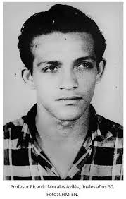
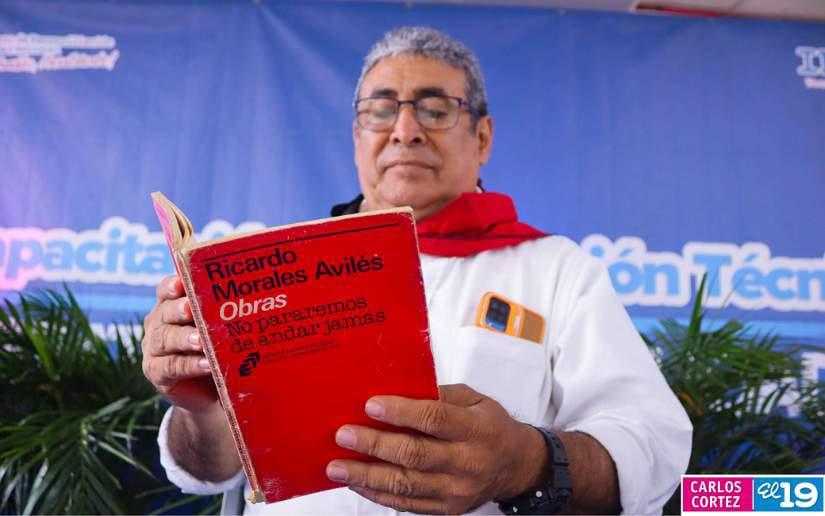
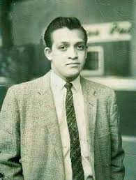

Orígenes y formación
Ricardo Morales Avilés creció en un contexto nacional marcado por profundas tensiones sociales y políticas. Esa realidad influyó de manera decisiva en su forma de mirar el pasado y de interpretar el presente. Desde joven mostró interés por la lectura, la historia nacional y las corrientes de pensamiento latinoamericano. Su formación humanística se fortaleció con el estudio sistemático de autores clásicos y contemporáneos, así como con la observación crítica de la realidad cotidiana.
En su etapa de aprendizaje, desarrolló una sensibilidad especial por los vínculos entre literatura, memoria e identidad. Para él, entender a Nicaragua implicaba no solo analizar acontecimientos políticos, sino también escuchar voces populares, rescatar procesos culturales y estudiar cómo se narraba el país desde diferentes sectores de la sociedad.
Madurez intelectual
Con el paso del tiempo, Morales Avilés se convirtió en una figura de consulta para quienes buscaban interpretar la evolución histórica de Nicaragua. Su perfil combinaba investigación, docencia, escritura y participación pública. Esto le permitió dialogar con públicos diversos: estudiantes, investigadores, líderes sociales, periodistas y lectores generales interesados en comprender con mayor profundidad la historia nacional.
Uno de sus rasgos más valorados fue su capacidad para conectar datos históricos con preguntas de actualidad. No se limitaba a la acumulación de hechos; proponía marcos de interpretación y estimulaba a pensar críticamente. En cada análisis insistía en la importancia de la cultura cívica, la educación y la responsabilidad colectiva.
Su biografía intelectual puede leerse como el recorrido de un autor que entendió la memoria histórica como un compromiso ético con el futuro.
Línea de tiempo resumida
- Etapa temprana: desarrollo del hábito lector, acercamiento a la historia y consolidación de una vocación humanística.
- Etapa de especialización: profundización en investigación, escritura y análisis de procesos políticos y culturales.
- Etapa de influencia pública: participación en foros, publicaciones y espacios de formación crítica para nuevas generaciones.
- Legado: continuidad de su pensamiento en ámbitos educativos, culturales y de reflexión ciudadana.
Imágenes de la etapa biográfica


